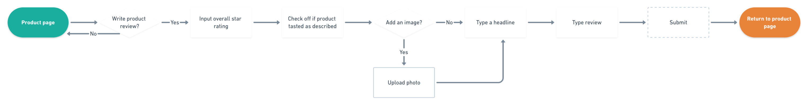
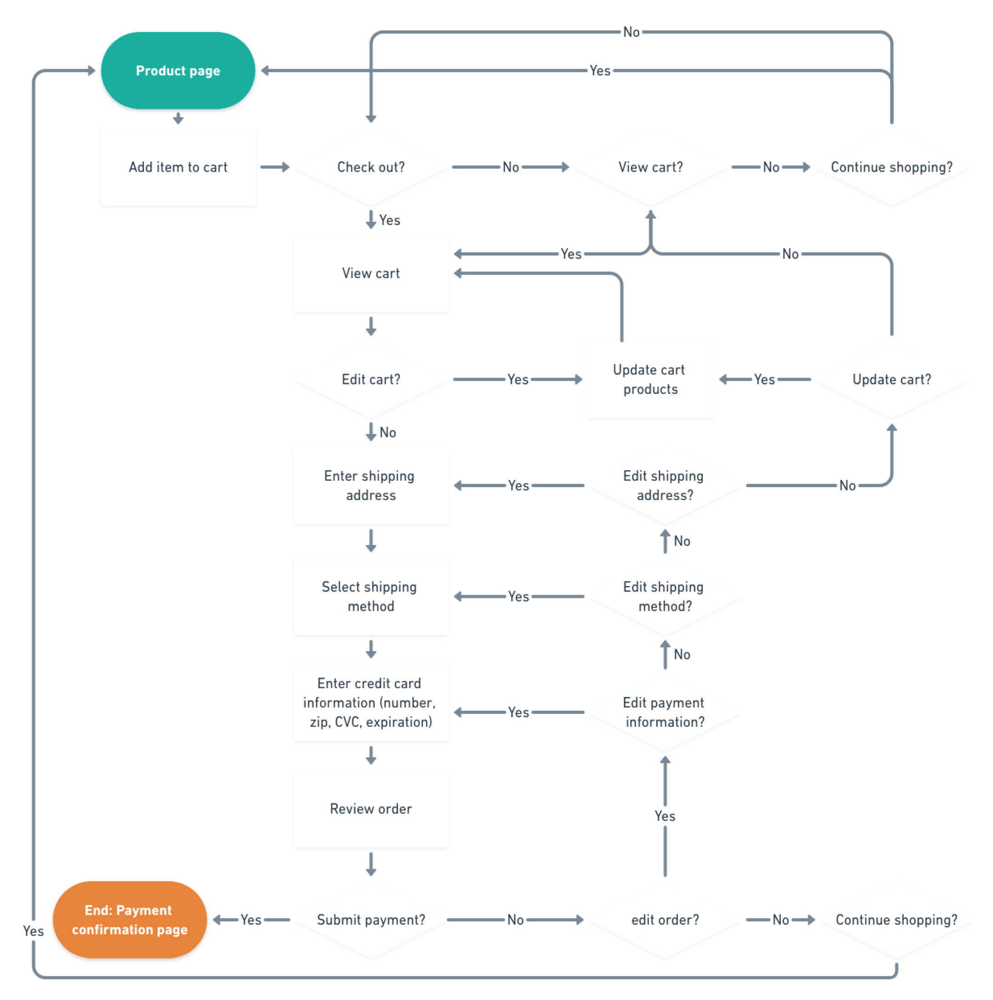
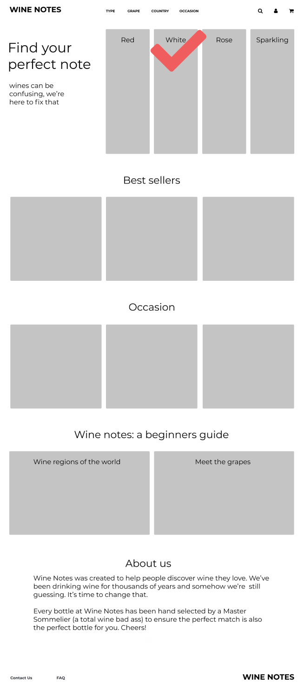
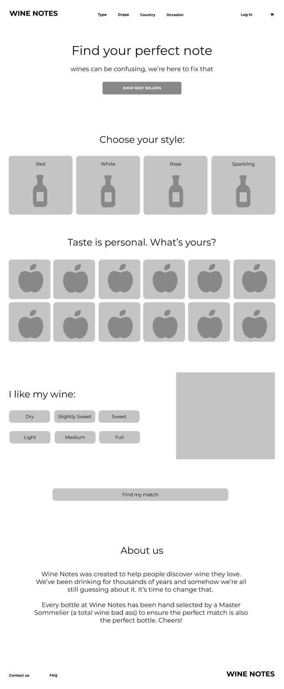

Reimagine Wine
Wine Notes helps people understand a traditionally esoteric beverage by relating it back to something we can all get behind: food.

Wine Notes helps people understand a traditionally esoteric beverage by relating it back to something we can all get behind: food.
Wine can be confusing, Wine Notes is here to fix that. Wine Notes helps users understand a traditionally esoteric beverage by relating it back to something we can all get behind: food. Users discover wine they’ll love by the brand’s flavor-focused highlights which guide the entire design.
Varietal, vintage, appellation, region—traditional wine e-commerce websites structure their information architecture and content by classifying buckets that mean little in terms of flavor to someone who is not well acquainted to wine.
How do we redesign the wine shopping experience to make flavor understandable to an every day (or not so often!) consumer?
Every aspect of Wine Notes was designed to relate wine back to the smell and flavors found in nature, a produce aisle, or out in the garden. Flavor rules the hierarchy. Product pages boast prominent flavor profile images along with called out highlights like pairings and sweetness. Product filtering options are taste-centric, allowing users to quickly find and match wines based on flavor preferences.
To further inform buying decisions Wine Notes implements a rating and review system which allows customers the option to leave written reviews and rate how closely the product descriptions actually align with the true wine flavor.
As the researcher, UX & UI designer, and product manager, I was responsible for creating Wine Notes from conception to completion.
When I set out to improve the wine e-commerce experience I needed to understand my target audience and identify the problem. I crafted two user surveys, one to narrow in on my demographics, and another to better understand people’s shopping behaviors.
I wanted to answer the following questions:
What are the factors people consider in selecting a wine?
What do people find challenging about purchasing wine?
Do users understand basic characteristics of popular wine varieties?
Are people interested in learning about the flavor profile?
How do people like to sort and filter wine?
What descriptions do users want to see on a product page?
What helps someone feel more confident in selecting a bottle they will like?
The survey questions were completed by 26 respondents.
See what started it all: my first user survey and second user survey.
58% of respondants have bought wine online before; This isn’t something new!
Special occasions: the most popular motivation for buying wine.
The most popular price range for a single bottle of wine
“The way the store is organized doesn't make it easy to filter for the taste you want without some level of wine knowledge.”
“Knowing what it will taste like when there is no description of the flavor.”
“Deciding what flavor I would like.”
“Not knowing if I like it before I buy it; for example, not all Chardonnays taste the same.”

When purchasing wine, 92% of test respondants would like to learn more about the wine’s flavor profile
77% of users would take a test to better understand what wines they like
The internet has an array of options for buying wine. I set out to understand if any of these companies were addressing what my research showed to be the most pressing problem––understanding what any given bottle of wine tastes like. I ran a competitive analysis of three popular e-commerce sites: Fresh Direct, Verve Wine, and Winc.
Fresh Direct is a local NYC food and beverage delivery company. Right from the beginning, the website was not an inviting place to explore and learn about wine. There were no reviews or high-level information on flavor. Poor product photos soured the experience further. However, customers benefit from the one-stop shopping experience since they can buy groceries too. Convenience at its finest.
Verve Wine was founded by Master Sommelier Dustin Wilson. For all its information on wine, there wasn’t an easy to understand product flavor profile. This leaves the assumption that users already know what a riesling or merlot tastes like from Rhone. Once again there were no customer reviews. Verve Wine’s elegant design with intuitive navigation, tagging system, and recommendations was an inspiration for Wine Notes.
The final e-commerce site I explored was Winc, a wine club. Winc doesn’t offer written reviews and users have to commit to their wine club subscription. But if you’re into trying new wines, a wine club could be the way to go! Winc’s product page offered a fantastic flavor profile––by far it’s biggest strength.
These competitors inspired features for Wine Notes while also shining a light on untapped opportunities––opportunities I knew users wanted from my initial research.
My three user types were developed based off respondants from my initial surveys.

“I must be missing out on wine that I may like simply because I don't see anything more than the wine term it's under.”
Why does Maya drink wine? “Essentially its juice with a kick. It's the best option for those who don't prefer hard liquor.” Maya simply wants to be assured she will like what she buys. She often chooses wine based off of price and the label artwork and never knows if she’s going to like it.

“It would be awesome to buy flights from different countries, new world vs old world, complexity vs balance, cherry vs earthy.”
Avery’s not on a website to only buy wine but to also learn. He enjoys getting to know a bottle by exploring its background: wineries, regions, and grapes. He’s looking to refine his palate and wants to try wine based on flavor profiles, balance, sweetness, etc.
“I've learned different characteristics of different regions. It is fun to put your knowledge to the test when tasting wine.”
Tara loves to try new wines and price is not an issue for her––quality and the right match are. She wants the assurance that the wine she’s purchasing will be a pleasure to drink not just for her, but for all her friends she’ll be serving it to.
Goals
Frustrations
Goals
Frustrations
Goals
Frustrations
My user stories needed to satisfy each of my personas. That meant giving Avery enough information to keep expanding his knowledge, a clear system for Maya to navigate choosing a bottle, and reviews to keep Tara informed. I mapped out my MVP based on goals which I organized by highest to lowest priority. These resulted in the following detailed flows.
1. As a new/returning customer, I want to browse/filter products

2. As a returning customer, I want to leave a review
3. As a new/returning customer, I want to add an item to cart and checkout
To kick off the design process I sketched out different patterns for my priority user stories with the goal to create my MVP screens. To further speed up the process, I shared design ideas with friends and family to refine my decisions before making them digital.


I had two different ideas for the landing page, one highlighted popular content people told me they looked for––best sellers and recommendations based on occasion. The other took users through a quick flavor preference test to then recommend wines. It was preference test time!
After 19 respondents, version one was winning by 58%. Even though that’s not statistically significant, people’s reasons for choosing it were strong. I moved forward with version one.
Popular content focused

Testing focused
My initial user surveys gave me insights into the highest ranked information shoppers want to see at a glance: product image, price, rating. With so many different ways to filter and sort wine, I explored different navigation patterns.
The product page is where Wine Notes really shined and differentiated itself from its competitors. The flavor profile is broken down and explained through both text and image. Reviews are easy to read and give from the product page.
It was time to put my ideas to the test. Using my low fidelity wireframes I conducted both in-person interviews and collected quantitative data using maze.design.